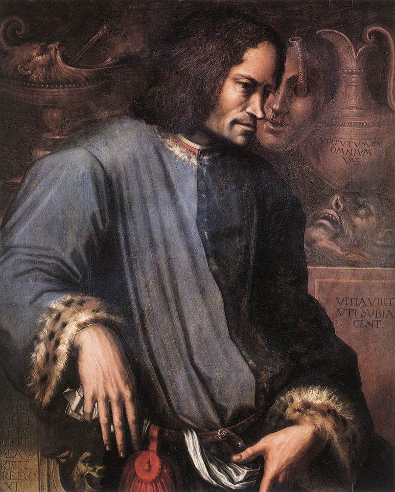
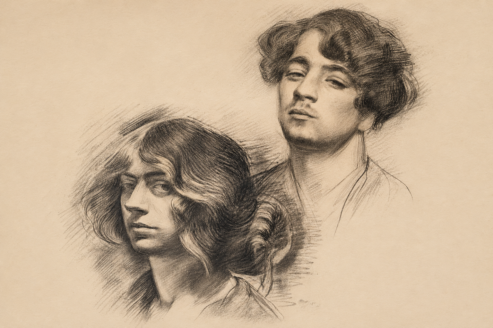
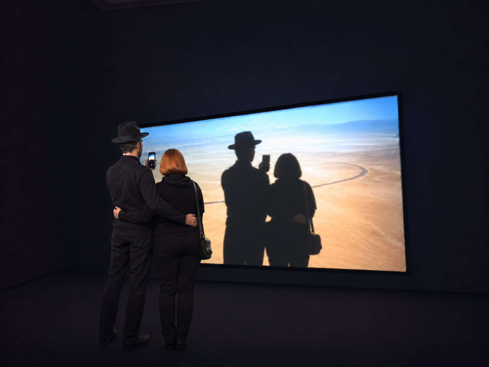
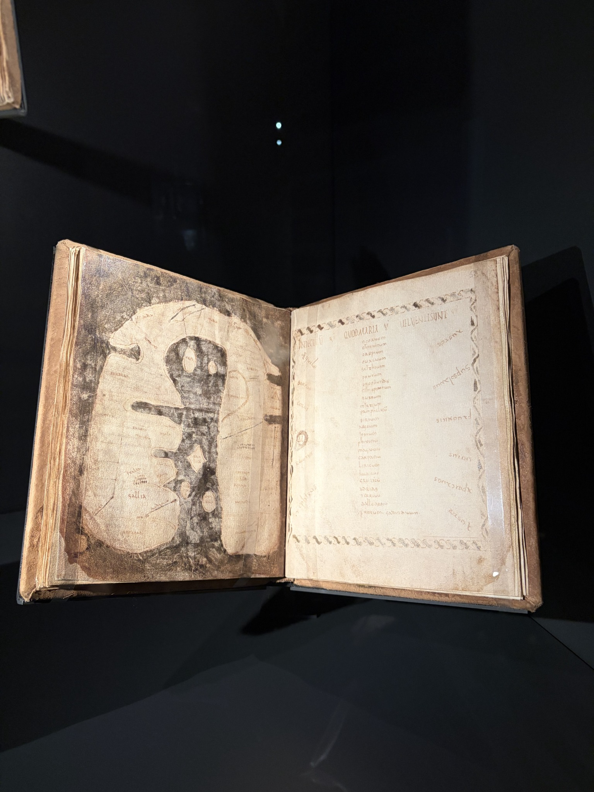

Parcours Renaissance

Parcours Renaissance
Apprendre à voir
oser regarder.
Trois façons de parcourir les œuvres, les artistes et les lieux.

Du Moyen Âge aux grands bouleversements de la Renaissance : suivre les évolutions de la peinture, de la sculpture et de l’architecture.
Explorer le parcours →
Des vies, des œuvres, des révolutions artistiques. Découvrir ceux qui ont changé notre manière de voir.
Découvrir les artistes →
Retrouver les œuvres dans leurs villes, leurs églises et leurs musées, pour préparer ou prolonger une visite.
Explorer les lieux →
Un geste, un visage, un animal ou une même idée… Les regards croisés rapprochent des œuvres d’artistes et d’époques différents. Les observer ensemble permet de découvrir des échos, des différences et des liens inattendus.
Découvrir les regards croisés →
France Culture, France Inter, ARTE… Des ressources sélectionnées pour découvrir les artistes et leurs œuvres autrement.
Découvrir les ressources →
Un musée, une ville, une œuvre qui m’arrête… Retrouvez mes visites, mes impressions et mes découvertes, au fil des escapades.
Explorer les carnets →